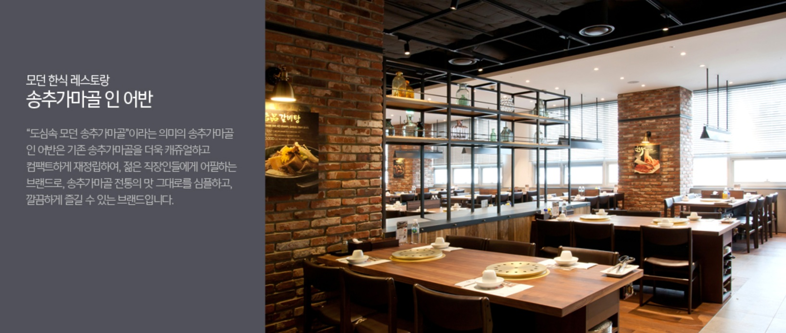

송추 가마골
1. 송추 가마골 소개
"도심속 모던 송추가마골"이라는 의미의 송추가마골 인 어반은 기존 송추가마골을 더욱 캐쥬얼하고 컴팩트하게 재정립하여, 젊은 직장인들에게 어필하는 브랜드로, 송추가마골 전통의
맛 그대로를 심플하고, 깔끔하게 즐길 수 있는 브랜드입니다.
2. 메뉴 소개
3. 교통 안내
- 주소: 서울특별시 마포구 독막로 311(염리동) 재화스퀘어 지하 1층
- 지하철: 5호선 공덕역 1번 출구 (도보 3분)
- 자가용: 본 건물 1층, 지하 2~3층 주차장 이용